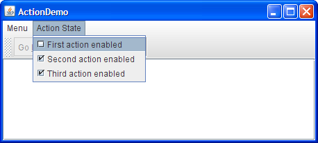
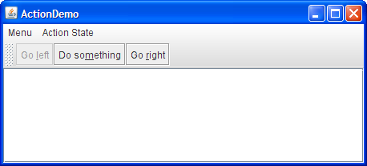

Lección: Usando Otras Características de Swing
Cómo Usar Acciones
Una
Action puede ser
usada para separar la funcionalidad y el estado de un componente. Por ejemplo, si tiene dos o más
componentes que realizan la misma función, considere usar un objeto Action para implementar la
función. Un objeto Action es un
oyente de acción que suministra
no sólo el manejo del evento de la acción, sino que también centraliza el manejo del estado de los disparadores
de evento de acción que componentes tales como
barra de herramientas de botones,
elementos de menú,
botones comunes, y
campos de texto. El estado que una
acción manejar incluyendo text, iconos, mnemotécnicos, estados habilitados, y estados seleccionados.
Normalmente adjunta una acción a un componente utilizando el método setAction. Aqué está lo que
ocurre cuando setAction está invocando sobre un componente:
-
El estado del componente es actualizado para que coincida con el del estado de la
Action. Por ejemplo, si los valores del texto y el icono de laActionfueron establecidos, el texto y el icono del componente son establecidos a esos valores. -
El objeto
Actionestá registrado como un oyente de acción en el componente. -
Si el estado de la
Actioncambia, el estado de los componentes es actualizado par que coincida con laAction. Por ejemplo, si cambia el estado habilitado de la acción, todos los componentes a los que esté enlazada cambiar sus estados habilitados para coincidir con la acción.
Aquí tiene un ejemplo de creación de un botón de menu de herramientas y elemento de menú que realizan la misma función:
Action leftAction = new LeftAction(); //el código de LeftAction es mostrado más tarde
...
button = new JButton(leftAction)
...
menuItem = new JMenuItem(leftAction);
Para crear un objeto Action, habitualmente crea una subclase de
AbstractAction y después la instancia. En su subclase, debe implementar el método
actionPerformed para reaccionar apropiadamente cuando el evento de la acción ocurra. Aquí tiene un
ejemplo de creación e instanciación de una subclase de AbstractAction:
leftAction = new LeftAction("Ve a la izquierda", anIcon,
"Este es el botón izquierda.",
new Integer(KeyEvent.VK_L));
...
class LeftAction extends AbstractAction {
public LeftAction(String text, ImageIcon icon,
String desc, Integer mnemonic) {
super(text, icon);
putValue(SHORT_DESCRIPTION, desc);
putValue(MNEMONIC_KEY, mnemonic);
}
public void actionPerformed(ActionEvent e) {
displayResult("Acción para el primer botón/elemento de menú", e);
}
}
Cuando la acción creada por el código precedente es enlazada a un botón y a un elemento de menú, el botón y
elemento de menú muestran el texto e icono asociados con la acción. El carácter L es usado para
los mnemotécnicos en el botón y elemento de menú, y el texto de tool-tip se establece a la cadena
SHORT_DESCRIPTION seguida por una representación de la tecla mnemotécnica.
Por ejemplo, hemos proporcionado un ejemplo simple,
ActionDemo.java
, el cual define tres acciones. Cada acción está enlazada a un botón y un elemento de menú. Gracias a los
valores mnemotécnicos establecidos para cada acción de botón, la secuencia de teclas Alt-L activa
el botón izquierdo, Alt-M el botón del medio, y Alt-R el botón derecho. La tool tip
para el botón izquierdo muestra Este es el botón izquierdo. Alt-L. Toda esta configuración ocurre
automáticamente, sin que el programa haga explícitamente llamadas para establecer el mnemotécnico o el texto de
la tool-tip. Como veremos más tarde, el programa en realidad hace llamadas para establecer el texto
del botón, pero sólo para evitar el usar los valores ya establecidos por las acciones.

Pruebe esto:
-
Pulse el botón Lanzar para ejecutar ActionDemo usando Java™ Web Start ( descargue KDJ 7 o posterior). O, para compilar y ejecutar usted mismo el ejemplo, consulte el índice de ejemplos.

-
Seleccione el elemento superior del menú de la izquierda (Menu > Ve a la izquierda).
El área de texto muestra algún texto identificando tanto la fuente del evento como el oyente de la acción que recibió el evento. -
Pulse el botón más a la izquierda en la barra de herramientas.
El área de texto de nuevo muestra información sobre el evento. Note que aunque la fuente de los eventos es diferente, ambos eventos fueron detectados por el mismo oyente de acción: el objetoActionenlazado a los componentes. -
Elija el elemento superior del menú Estado de Acción.
Esto deshabilita el objetoAction"Ve a la izquierda", que a su vez desactiva su elemento de menú asociado y botón.
Esto es lo que el usuario ve cuando la acción "Ir a la izquierda" está deshabilitada:
|
 |
 |
Aquí está el código que deshabilita la acción "Ve a la izquierda":
boolean selected = ...//verdadero si la acción debería estar habilitada;
//falso, de lo contrario
leftAction.setEnabled(selected);
Después de crear los componentes usando una Action, es posible que necesite personalizarlos. Por
ejemplo, podría querer personalizar la apariencia de uno de los componentes añadiendo o eliminado el icono o
el texto. Por ejemplo,
ActionDemo.java no tiene iconos en sus menús, y no hay texto en sus
botones. Aquí está el código que logra esto:
menuItem = new JMenuItem();
menuItem.setAction(leftAction);
menuItem.setIcon(null); //se eligió arbitrariamente no usar ícono en el menú
...
button = new JButton();
button.setAction(leftAction);
button.setText(""); //un botón con sólo un icono
Elegimos crear un botón con sólo un icono y un elemento de menú de solo texto desde la misma acción
estableciendo la propiedad icon a null y el texto a una cadena vacía. Sin embargo, si una
propiedad de la Action cambia, el control puede intentar restablecer el icono y el texto de la
Action de nuevo.
La IPA de Action
Las tablas siguientes enumeran los constructores y métodos comúnmente utilizados de Action. La IPA
para usar objetos Action se dividen en tres categorías:
| Clase | Propósito |
|---|---|
|
AbstractButton
JComboBox JTextField |
Estos componentes y sus subclases pueden tener una acción directamente asignada a ellos vía
setAction. Para más información sobre los componentes que están asociados a menudo con las
acciones, vea las secciones en
botones de barra de herramientas,
elementos de menú,
botones comunes, y
campos de texto. Para
obtener detalles sobre las propiedades que cada componente toma de Action, consulte la
documentación de la IPA para el método
configurePropertiesFromAction de la clase pertinente. Consulte también la tabla de
buttonActions.
|
| Constructor o Método | Propósito |
|---|---|
|
AbstractAction()
AbstractAction(String) AbstractAction(String, Icon) |
Crea un objeto Action. A través de los argumentos, puede especificar el texto y el icono
que serán utilizados por los componentes a los que la acción se enlaza.
|
|
void setEnabled(boolean)
boolean isEnabled() |
Obtiene y establece si los componentes que la acción controla están habilitados. Invocar
setEnabled(false) deshabilita todos los componentes que la acción controla. Del mismo
modo, invocar setEnabled(true) habilita los componentes de la acción.
|
|
void putValue(String, Object)
Object getValue(String) |
Obtiene y establece un objeto asociado con una tecla especificada. Usada para establecer y obtener propiedades asociadas con una acción. |
Esta tabla define las propiedades que pueden ser establecidas en una acción. La segunda columna lista qué
componentes automáticamente usan las propiedades (y qué método es llamado específicamente). Por ejemplo,
establecer la ACCELERATOR_KEY en una acción que está enlazada a un elemento de menú, significa que
se llama a JMenuItem.setAccelerator(KeyStroke) automáticamente.
| Propiedad |
Auto-Aplicado a: Clase (Método Llamado) |
Propósito |
|---|---|---|
| ACCELERATOR_KEY | JMenuItem
(setAccelerator) |
La KeyStroke a ser usada como el acelerador para la acción. Para una descripción de los
aceleradores versus mnemotécnicos, vea
Habilitar la Operación de Teclado.
|
| ACTION_COMMAND_KEY |
AbstractButton, JCheckBox, JRadioButton
(setActionCommand) |
La cadena comando asociada con el ActionEvent.
|
| LONG_DESCRIPTION | None | La descripción más larga para la acción. Puede ser usada para ayuda sensitiva al contexto. |
| MNEMONIC_KEY |
AbstractButton, JMenuItem, JCheckBox, JRadioButton
(setMnemonic) |
El mnemotécnico para la acción. Para una descripción de aceleradores versus mnemotécnicos, vea Habilitar la Operación de Teclado. |
| NAME |
AbstractButton, JMenuItem, JCheckBox, JRadioButton
(setText) |
El nombre de la acción. Puede establecer esta propiedad cuando crea la acción usando los constructores
AbstractAction(String) o AbstractAction(String, Icon).
|
| SHORT_DESCRIPTION |
AbstractButton, JCheckBox, JRadioButton
(setToolTipText) |
La descripción corta de la acción. |
| SMALL_ICON |
AbstractButton, JMenuItem
(setIcon) |
El icono para la acción usado en la barra de herramientas o e un botón. Puede establecer esta propiedad
cuando crea la acción usando el constructor AbstractAction(name, icon) constructor.
|
Ejemplos que Usan Actions
Los siguientes ejemplos usan objetos Action.
| Ejemplo | Dónde Se Describe | Notas |
|---|---|---|
ActionDemo |
Esta sección | Usa acciones para enlzar botones y elementos de menú a la misma función. |
TextComponentDemo
|
Características del componente de texto |
Usa acciones de texto para crear elementos de menú para los comandos de edición de texto, tales como
cortar, copiar, y pegar, y para enlazar pulsaciones de tecla al movimiento del cursor. También implementa
subclases personalizadas de AbstractAction que implementan deshacer y rehacer. La
descripción de la acción de texto comienza en
Conceptos: Acerca de los Kits de Editor.
|